第一季
第1话：とんでもスキルは役に立つ
超常技能意外地有用
ムコーダ被召唤到异世界后，用网络超市购买的食材制作了第一顿饭。料理的香气引来了传说级魔兽フェンリル的フェル，从而结下了从魔契约。
ハムタマサンド（火腿蛋三明治）
其他用网络超市购买的火腿和鸡蛋制作的三明治，是ムコーダ在异世界的第一道料理。
ソーセージたっぷりポトフ（香肠土豆炖锅）
洋食在融化了黄油的锅中翻炒培根，加入卷心菜、胡萝卜、土豆和香肠，用高汤慢慢炖煮而成的法式炖锅。
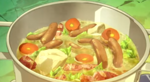
动画截图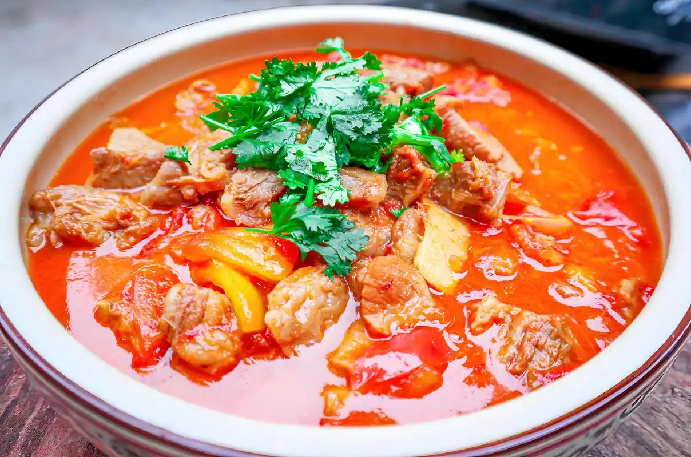
现实料理（ポトフ）制作方法
- バターを溶かした鍋にベーコンを投入して炒める在融化了黄油的锅中放入培根翻炒
- キャベツと人参とじゃがいも、ソーセージを入れる放入卷心菜、胡萝卜、土豆和香肠
- コンソメスープでじっくり煮込んで完成用高汤慢慢炖煮完成
レッドボアの生姜焼き（红野猪姜汁烧肉）
和食 关键料理旅途中遭遇红野猪（类似野猪的魔兽）后获取的肉制作的纪念性首道魔物料理。这道菜的香气引来了传说级魔兽芬里尔，促成了从魔契约。
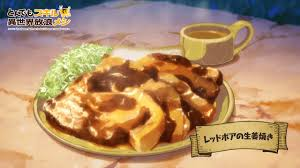
动画截图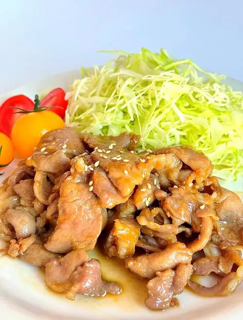
现实料理（豚肉の生姜焼き）制作方法
- レッドボアの肉を薄切りにする将红野猪肉切成薄片
- 生姜焼きのタレにしばらく漬け込む在姜汁烧肉酱汁中腌制一段时间
- 熱したフライパンにサラダ油を引いてタレが肉全体に絡まる様に焼く在加热的平底锅中倒入沙拉油，将酱汁烧至裹满肉片
- タレにとろみが付いたところで火を止め、千切りキャベツを添えて完成酱汁变浓稠后关火，配上切丝卷心菜完成
🐾 芬里尔：「…这家伙还挺有两下子的嘛」——一口咬下的瞬间，被那极致的美味所震撼，半强迫地与穆寇达缔结了从魔契约，任命他为「吾之厨师」。
第2话：目立つ従魔は生きる伝説
显眼的从魔是活着的传说
ムコーダ与フェル来到卡雷尔镇，在冒险者公会注册。为了不引人注目，ムコーダ用ロックバード和レッドボア的肉制作了照り焼き和ステーキ丼，但フェル的传说级身份还是引起了轰动。
ロックバードの照り焼き（岩鸟照烧）
和食使用岩鸟肉制作的照烧。甘咸酱汁裹满肉片，是一道下饭佳肴。
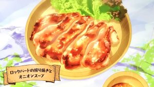
动画截图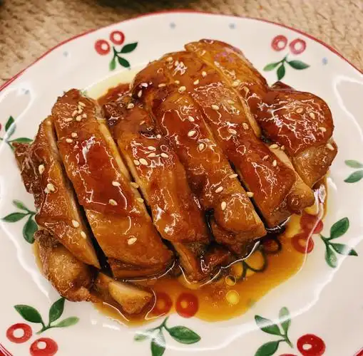
现实料理（照り焼きチキン）制作方法
- 油をひいたフライパンに肉を乗せて両面をこんがり焦げ目が付くまで焼く在涂了油的平底锅中放入肉，两面煎至焦黄
- 照り焼きのタレを煮立たせて肉に絡めて完成将照烧酱汁煮沸后裹在肉上完成
オニオンスープ（洋葱汤）
洋食搭配照烧一起制作的洋葱汤。洋葱的甘甜融入汤中，温暖可口。
レッドボアのステーキ丼（红野猪牛排盖饭）
和食将红野猪肉做成牛排盖在米饭上的盖饭。肉汁渗入米饭，堪称绝品。
 动画截图
动画截图
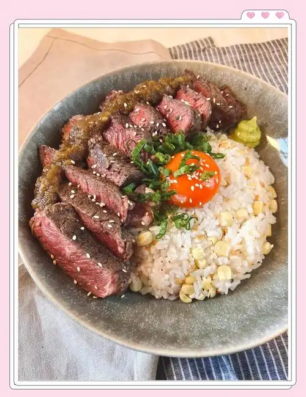
现实料理（ステーキ丼）制作方法
- 油をひいたフライパンに肉を置き両面をレアで焼く在涂了油的平底锅中放入肉，两面煎至半熟
- ごはんの上に乗せてステーキ醤油をかけて完成放在米饭上淋上牛排酱油完成
第3话：過ぎた力は料理の為に
过剩的力量为了料理
ムコーダ发现食用异世界食材制作的料理能提升ステータス。为了最大化效果，他用各种魔獣肉制作了多道料理，甚至买来了国产黒毛和牛与魔獣肉对比。
挽き肉増量ミートソーススパゲッティ（增量肉酱意面）
洋食使用了大量牛猪绞肉的肉酱意面。撒上帕尔马干酪作为收尾。
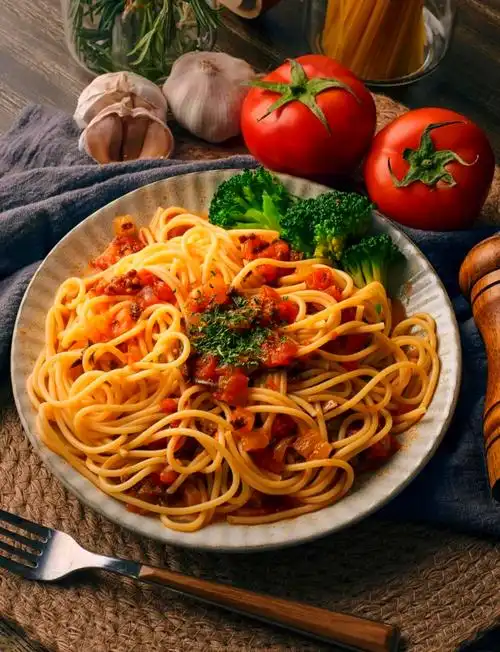
现实料理（ミートソーススパゲッティ）制作方法
- 微塵切りにした玉ねぎを炒めて牛豚の挽き肉を投下し火が通ったらミートソースとコンソメを入れて煮込む将洋葱切碎炒香，加入牛猪绞肉炒至变色，加入肉酱和高汤炖煮
- ソースをパスタにかけてパルメザンチーズをまぶす将酱汁浇在意面上，撒上帕尔马干酪
2種類のポークピカタ（两种炸猪排）
洋食使用兽人肉制作的皮卡塔。用混合了粉奶酪和欧芹的蛋液裹衣，做出酥脆口感。
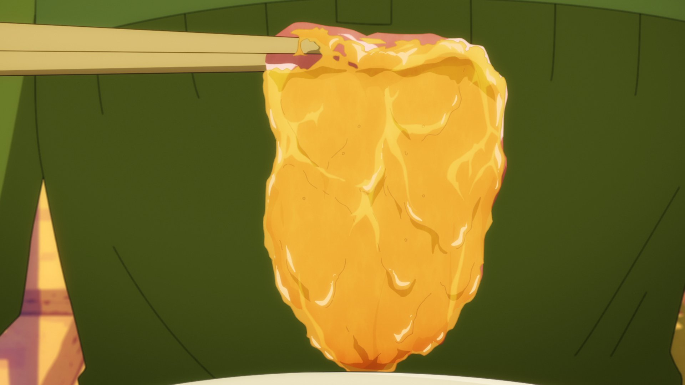
动画截图制作方法
- 塩胡椒をまぶしたオークの肉に小麦粉をはたく在撒了盐胡椒的兽人肉上拍上面粉
- 粉チーズorパセリを混ぜた卵にくぐらせて焼く蘸上混合了粉奶酪或欧芹的蛋液后煎制
異世界のお肉惣菜盛り合わせ（异世界肉类拼盘）
其他使用兽人肉等制作的配菜拼盘。可以一次享用多种肉类料理。
国産黒毛和牛ステーキ（国产黑毛和牛牛排）
洋食ネットスーパーで購入した最高級の黒毛和牛をステーキに。魔獣肉との味の違いを比較するために用意された。
第4话：地図が無くては始まらない
没有地图就无法开始
ムコーダ为了获取地图和情报，接受了各种讨伐委托。在旅途中猎获了コカトリス和オーク，制作了ソテー、焼き鳥、とんかつ等多道料理。
コカトリスのソテー（鸡蛇煎排）
洋食将鸡蛇肉从皮面开始慢慢煎熟，淋上柠檬黄油酱油酱汁的一道菜。
制作方法
- 皮目からじっくり焼いたコカトリスの肉にレモンバターソースに少し醤油を足したタレをかける将鸡蛇肉从皮面开始慢慢煎熟，淋上柠檬黄油酱油酱汁
異世界の焼き鳥盛り合わせ（异世界烤鸟串拼盘）
和食将鸡蛇和岩鸟的肉串在签子上烤制的烤串拼盘。
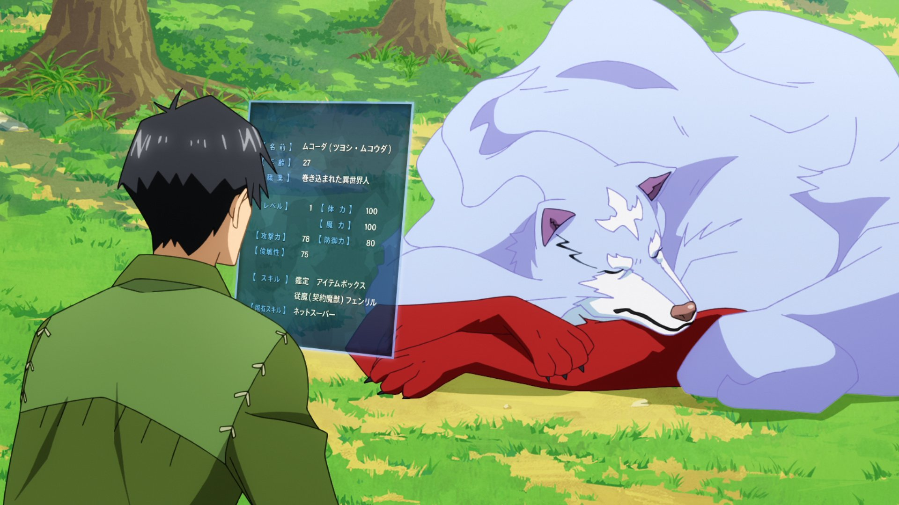
动画截图異世界のとんかつ（异世界炸猪排）
和食将兽人肉裹上面衣放入油中炸制而成的酥脆炸猪排。
 动画截图
动画截图
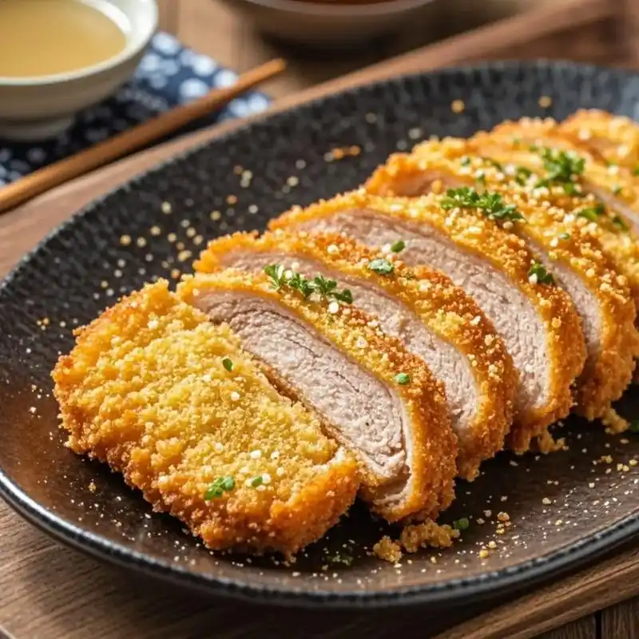
现实料理（とんかつ）制作方法
- 柔らかくした肉に小麦粉・溶き卵・パン粉の順に付ける将拍软的肉依次裹上面粉、蛋液、面包糠
- 熱した油で揚げる放入热油中炸制
ヒレカツと白米（里脊炸排配白饭）
和食使用兽人里脊肉制作的里脊炸排。搭配白米饭一起享用的简单一道菜。
第5话：風の女神は甘味がお好き
风之女神喜欢甜食
ムコーダ在湖边钓到了バイオレットトラウト和キングトラウト，制作了多种鱼类料理。风之女神ニーナ被料理的香气吸引而来，特别喜爱どら焼き等甜食。
バイオレットトラウトの塩焼き（紫鳟盐烤）
和食将紫鳟去除内脏、撒上盐，简单烤制而成的一道菜。
制作方法
- 魚の内臓を取って水でよく洗い塩をまぶして焼く去除鱼的内脏，用水洗净，撒盐烤制
キングトラウトのホイル焼き（王鳟锡纸烤）
洋食将王鳟鱼肉块与洋葱、香菇、滑子菇、黄油、盐胡椒、酒混合，用铝箔包好蒸烤而成的一道菜。
制作方法
- 魚の切り身を玉ねぎ・しめじ・えのきとバター、塩胡椒、お酒と合わせてアルミホイルで包んで焼く将鱼肉块与洋葱、香菇、滑子菇、黄油、盐胡椒、酒混合，用铝箔包好烤制
キングトラウトのムニエル（王鳟香煎）
洋食在王鳟鱼肉块上撒盐胡椒、裹上面粉，用黄油煎制的黄油煎鱼。
制作方法
- 魚の切り身に塩・胡椒をふって寝かす在鱼肉块上撒盐胡椒静置
- 小麦粉をまぶし焼いて完成裹上面粉煎制完成
オーク肉のみそ焼き丼（兽人肉味噌烤盖饭）
和食将味噌腌制的兽人烤肉和卷心菜盛在米饭上的盖饭。
 动画截图
动画截图
制作方法
- 味噌漬け仕立ての焼き肉とキャベツをご飯に盛りつける将味噌腌制的烤肉和卷心菜盛在米饭上
どら焼きと緑茶（铜锣烧与绿茶）
甜品 关键料理从网络超市购买的铜锣烧。风之女神宁利露被这甘甜所魅惑，成为她向穆寇达求助的契机。
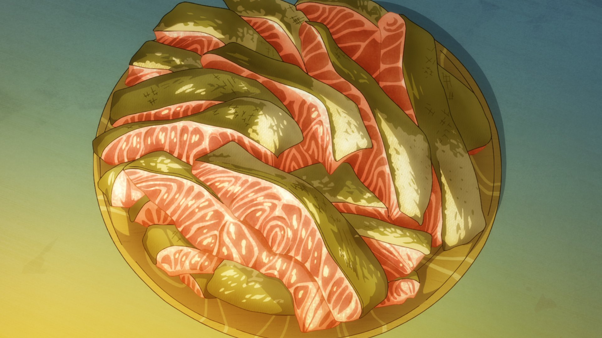
动画截图🌬️ 宁利露（风之女神）：「这甜食…还想再吃更多！」——被铜锣烧的甘甜所打动，决心将自己的加护赐予穆寇达。
第6话：成長は突然やってくる
成长突然到来
スイ（スライム）在食用了大量异世界食材后突然进化，获得了说话的能力。ムコーダ为此庆祝，制作了親子丼和各种お惣菜，还买了ケーキ和シュークリーム作为甜点。
異世界のお惣菜（异世界家常菜拼盘）
其他穆寇达将网络超市购买的食材与异世界食材组合制作的家常菜拼盘。
ケーキとシュークリーム（蛋糕与泡芙）
甜品从网络超市购买的蛋糕和泡芙。为庆祝小水的成长而准备的点心。
半熟トロトロ ロックバード親子丼（半熟岩鸟亲子盖饭）
和食 关键料理使用岩鸟肉和鸡蛋制作的亲子丼。半熟蛋液柔滑包裹，是小水成长庆祝宴的主菜。
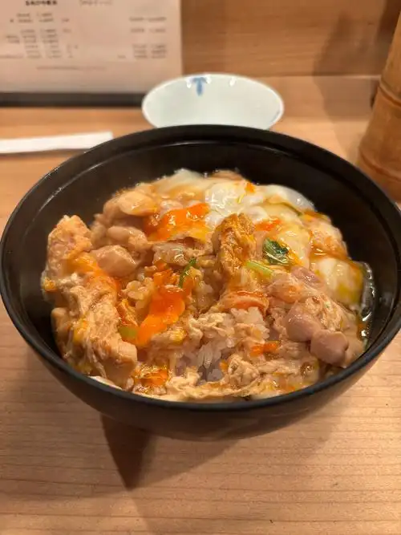
现实料理（親子丼）制作方法
- 鶏肉と玉ねぎをだし醤油・みりん・砂糖で作っただしで煮込む将鸡肉和洋葱用出汁酱油、味醂、糖调制的高汤炖煮
- 溶き卵を回し入れ、炊き立てのご飯に乗せて完成淋入打散的蛋液，盖在刚煮好的米饭上完成
💧 小水：「好好吃！舔舔…啊，能说话了！」——食用了大量异世界食材后急速成长的小水，第一次开口说话的纪念性餐食。
第7话：狼は魔獣と踊る
狼与魔兽共舞
ムコーダ一行在地下迷宫中遭遇了强大的ブラックサーペント。击退后用其肉制作了激辛チリ和チリサンド，还有オーク肉のとんかつ。
ブラックサーペントチリ（黑蛇辣味炖肉）
中华使用黑蛇肉制作的激辣炖肉。用中华汤、豆瓣酱、番茄酱和甜面酱制作的辣酱裹满肉块。
制作方法
- 中華スープ、豆板醤、ケチャップと隠し味に甜麺醤でチリソースを作る用中华汤、豆瓣酱、番茄酱和甜面酱制作辣酱
- 口大に切った肉に砂糖をかけ塩・酒を入れて寝かした後、片栗粉をまぶす将肉切成一口大小，撒糖、加盐和酒腌制后裹上片栗粉
- フライパンでしょうが・ニンニクに火を通し肉を炒めた後、チリソースと玉ねぎ、白ネギを入れ水溶き片栗粉でとろみを付ける在平底锅中炒香姜蒜后炒肉，加入辣酱、洋葱、葱白，用水溶片栗粉勾芡
ブラックサーペントチリサンド（黑蛇辣味炖肉三明治）
其他将黑蛇辣味炖肉夹在面包中的三明治。便于携带的野外食物。
オーク肉のあつあつとんかつ（兽人肉炸猪排）
和食将兽人肉裹上面衣放入油中炸制的热腾腾炸猪排。酥脆面衣与多汁肉质的组合。
制作方法
- 柔らかくした肉に小麦粉・溶き卵・パン粉の順に付ける将拍软的肉依次裹上面粉、蛋液、面包糠
- 油で揚げる放入油中炸制
第8话：ボスキャラはどれも美味い
Boss角色都很美味
ムコーダ一行挑战地下迷宫的ボスモンスター，获得了大量高品质的魔獣肉。用各种肉制作了からあげ和惣菜パンセット。
いろんなお肉のからあげ（各种肉的炸鸡块）
和食将各种魔兽肉切成一口大小后炸制的炸鸡块。有酱油味和盐味两种口味。
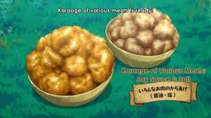
动画截图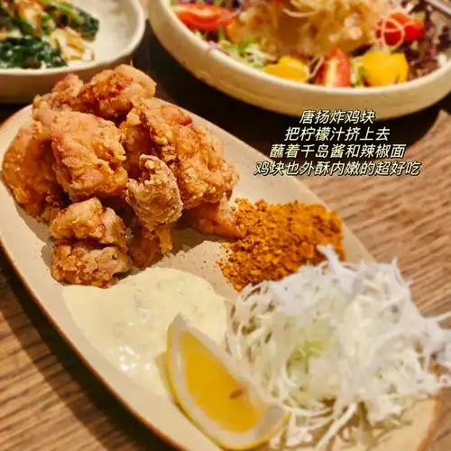
现实料理（鶏のからあげ）制作方法
- ひとくちサイズに切った肉を袋に入れ、にんにく・酒・醤油を入れて馴染ませる将肉切成一口大小放入袋中，加入大蒜、酒、酱油揉匀
- 小麦粉を入れてよく振って油で揚げる加入面粉摇匀后放入油中炸制
惣菜パンセット（熟食面包套餐）
其他从网络超市购买的配菜面包套装。有炸鸡面包和各种三明治面包等。
第9话：討伐依頼は金と肉
讨伐委托是金钱和肉
ムコーダ积极接受讨伐委托以赚取金钱和获取魔獣肉。制作了バンバンジー、ピーマン炒め、バンバンジーサンドイッチ、二度あげ、とんかつ等多道料理。
ロックバードのバンバンジー（岩鸟棒棒鸡）
中华将岩鸟鸡胸肉煮熟撕碎，配上番茄和黄瓜，淋上芝麻酱汁的凉菜。
制作方法
- 胸肉を酒と塩を入れたお湯茹でて火が通ったら冷ます将鸡胸肉放入加了酒和盐的热水中煮熟后冷却
- 割いた茹で肉と輪切りのトマト、千切りのキュウリを皿に盛って胡麻ドレッシングをかける将撕碎的煮肉、切片的番茄、切丝的黄瓜盛在盘中，淋上芝麻酱汁
ロックバードとピーマンの炒め物（岩鸟与青椒炒肉）
中华将岩鸟肉与彩椒、青椒用蚝油酱油味炒制的中式风味菜肴。
制作方法
- ひとくち大に切った肉を酒と醤油で下味を付け両面をこんがり焼く将肉切成一口大小，用酒和酱油调味后两面煎至焦黄
- パプリカとピーマン、オイスター醤油味の中華ペーストを投入して炒める加入彩椒、青椒和蚝油味的中式酱料翻炒
バンバンジーのサンドイッチ（棒棒鸡三明治）
其他将棒棒鸡夹在面包中的三明治。便于携带作为便当的一道菜。
いろんなお肉の二度あげ（各种肉二次炸）
和食将各种魔兽肉进行二重炸制的炸鸡块。外酥里嫩，口感多汁。
制作方法
- 最初は低温の油で揚げて中まで火を入れる先用低温油炸，将内部炸熟
- 最後に高温でカラッと揚げる最后用高温炸至酥脆
オーク肉のとんかつ（兽人肉炸猪排）
和食将兽人肉裹上面衣放入油中炸制的炸猪排。能享受酥脆口感的定番料理。
制作方法
- 柔らかくした肉に小麦粉・溶き卵・パン粉の順に付ける将拍软的肉依次裹上面粉、蛋液、面包糠
- 油で揚げる放入油中炸制
第10话：二匹の従魔はチート過ぎる
两只从魔太超模
フェルとスイの圧倒的な強さが際立つ回。ブラッディホーンブルを狩獲し、その極上の肉でカツサンドとステーキを制作。
オークカツサンド（兽人肉炸排三明治）
和食将兽人肉做成炸排夹在面包中的炸排三明治。卷心菜和酱汁满满。
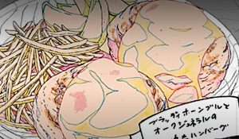
动画截图ロックバードカツサンド（岩鸟炸排三明治）
和食将岩鸟肉做成炸排夹在面包中的炸排三明治。酥脆面衣是其特色。
ブラッディホーンブルのステーキ（血角牛牛排）
洋食 关键料理被称为「异世界的黑毛和牛」的血角牛厚切牛排。霜降纹理的鲜美浓缩其中，是最高级料理。
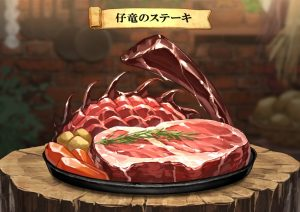
动画截图制作方法
- 厚切りにした肉を塩・胡椒で下ごしらえする将厚切肉用盐胡椒调味
- 強火のフライパンで1分ほど焼き、火を弱めて1分ほど焼く用强火煎约1分钟，转小火再煎约1分钟
- 反対の面も同じようにミディアムレアに焼く反面同样煎至半熟
- アルミホイルで包んで5分間余熱を入れて完成用铝箔包好静置5分钟完成
🐾 芬里尔：「这个…还不赖」——面对血角牛的顶级肉质，芬里尔也露出了满足的表情。对那霜降纹理的鲜美发出了感叹。
第11话：商売は御婦人の為に
生意为了女士
ムコーダ开始在卡雷尔镇经营移动销售料理的生意，为贵族女士们提供美食。使用ブラッディホーンブル和オークジェネラル的肉制作了ハンバーグ和メンチカツ。
ブラッディホーンブルとオークジェネラルの合い挽きハンバーグ（血角牛与兽人将军混合汉堡排）
洋食 关键料理将血角牛与兽人将军的肉混合绞制而成的极品汉堡排。淋上番茄酱和辣酱油调制的特制酱汁供食。
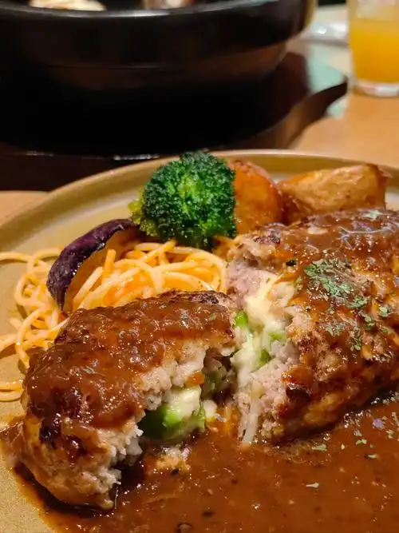
现实料理（ハンバーグ）制作方法
- 牛乳に浸したパン粉にひき肉と卵、炒めた玉ねぎの微塵切りを入れて塩・胡椒を入れてよく捏ねる将牛奶泡过的面包糠与绞肉、蛋、炒过的洋葱碎混合，加盐胡椒充分揉捏
- 形を整えフライパンで両面を焼いたら水を刺して蒸し焼きにする整形后在平底锅中两面煎，加水蒸煎
- ソースはケチャップとウスターソースを合わせてかける酱汁用番茄酱和辣酱油混合淋上
👑 贵族女性们：「这个汉堡肉…好吃到难以置信！」——使用异世界顶级肉类制作的汉堡肉，让卡雷尔的贵族女性们也大加赞赏。穆寇达的料理店大受欢迎。
3種のお肉のメンチカツ（三种肉炸肉饼）
和食将异世界三种肉混合绞制后制作的炸肉饼。炸至金黄色的酥脆面衣内是多汁的肉馅。
制作方法
- 合い挽き肉に小麦粉を付ける在混合绞肉上拍上面粉
- 溶き卵に浸したあと生パン粉をまぶす蘸上蛋液后裹上生面包糠
- 狐色まで揚げて完成炸至金黄色完成
第12话：冒険は食の数ほど
冒险和食物一样多
第一季最终话。ムコーダ一行在旅途中遭遇ワイバーン，击退后获得了其高品质的肉。用ワイバーン肉制作了スペシャル牛丼和ビーフシチュー，为第一季的冒险画上了美味的句号。
ワイバーン肉のスペシャル牛丼（飞龙肉特制牛肉盖饭）
和食 关键料理将飞龙的薄切肉用甘咸酱汁炖煮后盛在米饭上的牛丼。多放汤汁配上红姜，是穆寇达的得意之作。
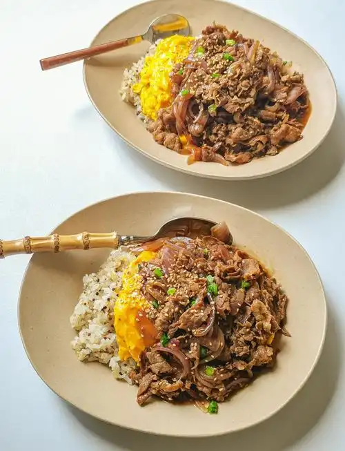
现实料理（牛丼）制作方法
- 鍋に水・しょうゆ・砂糖・酒を入れて煮立たせ、おろし生姜を少し入れる锅中加水、酱油、糖、酒煮沸，加入少许姜末
- くし型に切った玉ねぎを投入し、薄切りにした肉を入れてアクを取りながら煮込む加入梳形切法的洋葱，放入薄切肉片，边去浮沫边炖煮
- ご飯の上につゆだくで盛り、紅生姜を添えて完成浇在米饭上多放汤汁，配上红姜完成
🐾 芬里尔：「牛丼就是…这样的东西吗。还不赖」——用飞龙的顶级肉制作的牛丼，连芬里尔也心服口服。对那甘咸酱汁与米饭的组合大感满足。
ワイバーン肉のビーフシチュー（飞龙肉炖牛肉）
洋食将飞龙的肉用红酒和德米格拉斯酱慢慢炖煮的炖牛肉。蔬菜的甘甜与肉的鲜美交融，味道醇厚。
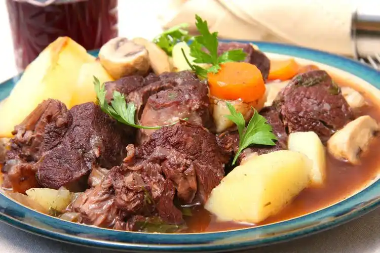
现实料理（ビーフシチュー）制作方法
- ひとくち大に切った肉を塩・胡椒で下味を付け、バターをひいた鍋で焼き色が付くまで炒める将肉切成一口大小，用盐胡椒调味，在涂了黄油的锅中炒至变色
- にんじん・玉ねぎ・じゃがいもを入れて火が通ったら赤ワインと水、コンソメを入れて煮込む加入胡萝卜、洋葱、土豆，炒熟后加入红酒、水、高汤炖煮
- デミグラスソース缶とケチャップを少し入れてさらに煮込み、少し寝かせて完成加入少许罐装德米格拉斯酱和番茄酱继续炖煮，静置一会儿完成